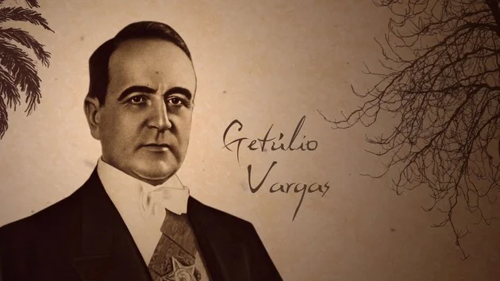
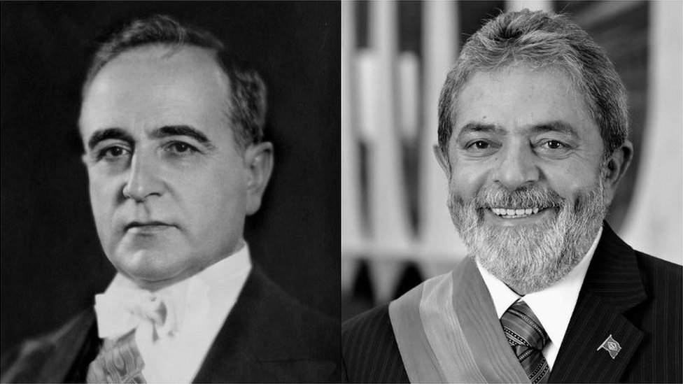

O Período da Era Vargas
A Era Vargas é um período importante da história do Brasil que compreende os governos de Getúlio Vargas, que teve início em 1930 e se estendeu até 1954. Durante esse tempo, o Brasil passou por várias transformações políticas, econômicas e sociais.
Principais Características
- Centralização do poder: Getúlio Vargas concentrou o poder nas mãos do Executivo, governando com grande autonomia.
- Políticas de industrialização: Vargas promoveu a industrialização do Brasil, estimulando a criação de indústrias e empresas nacionais.
- Leis trabalhistas: Foram estabelecidas leis trabalhistas, como a CLT (Consolidação das Leis do Trabalho), que garantiram direitos aos trabalhadores.
- Estado Novo: Vargas instituiu o Estado Novo, um período autoritário que durou de 1937 a 1945, restringindo liberdades políticas.
- Participação na Segunda Guerra Mundial: O Brasil se envolveu na Segunda Guerra Mundial ao lado dos Aliados, contribuindo com tropas.
Getúlio Vargas
Getúlio Vargas foi o líder mais proeminente desse período e desempenhou um papel fundamental na transformação do Brasil. Ele implementou uma série de reformas e políticas que impactaram significativamente o país.
Vargas nasceu em 1882 e exerceu o cargo de presidente em dois momentos distintos: de 1930 a 1945 e de 1951 a 1954. Durante seu governo, ele adotou medidas que visavam modernizar a economia, promover a industrialização e melhorar as condições de vida da população.
Legado
O legado da Era Vargas ainda é sentido no Brasil atual. Muitas das políticas e instituições criadas durante esse período continuam a influenciar o país até os dias de hoje. A CLT, por exemplo, ainda é a base da legislação trabalhista brasileira, e a atuação do Estado na economia deixou marcas profundas na história do país.